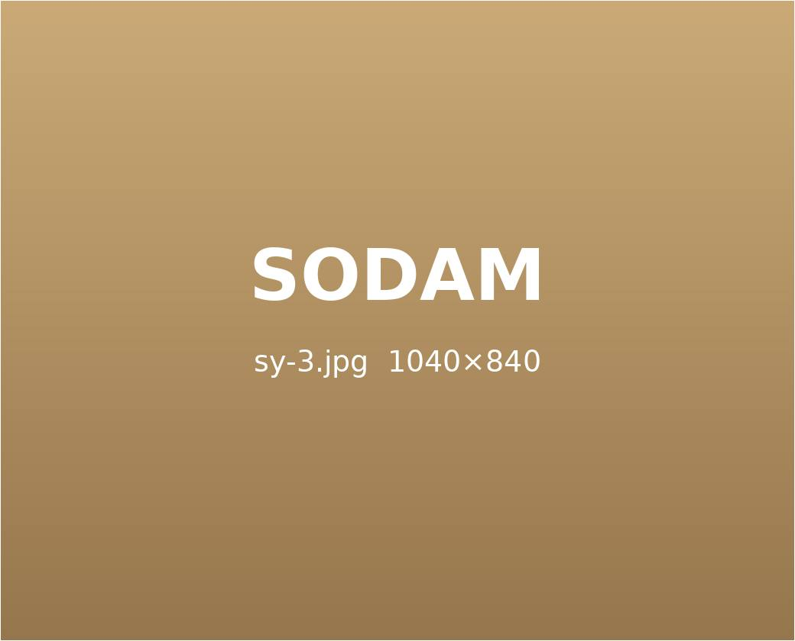
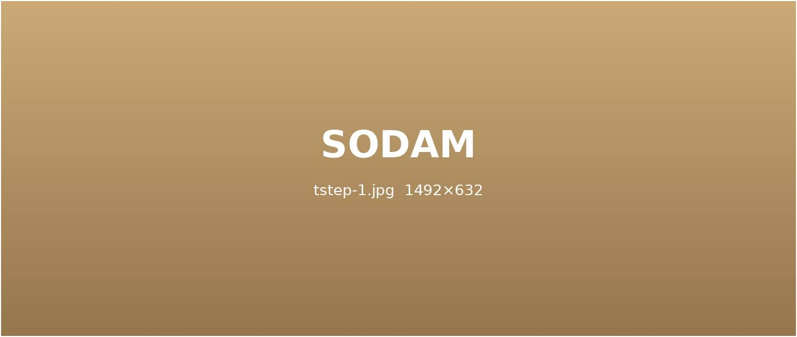
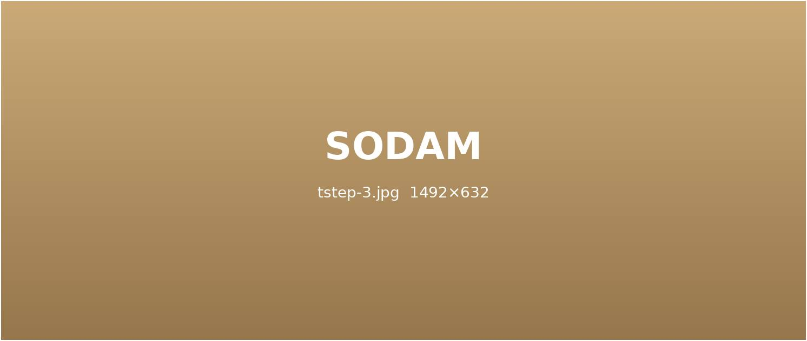
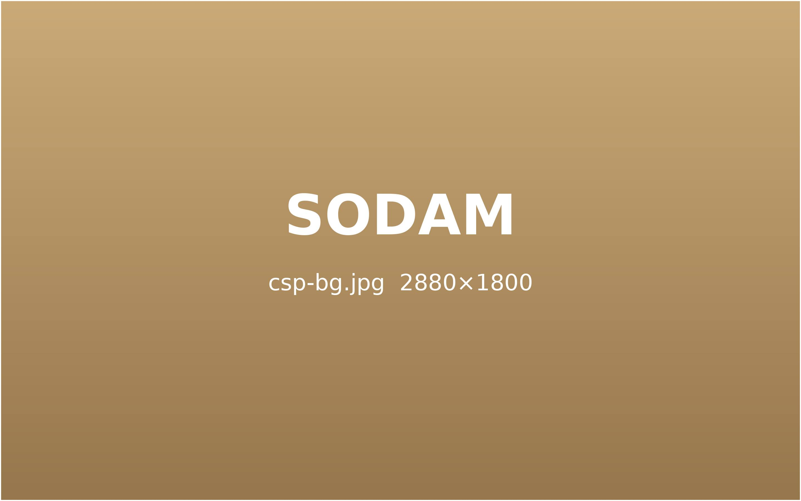
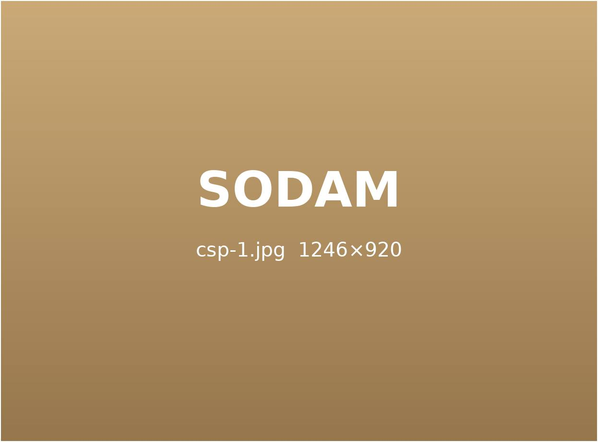
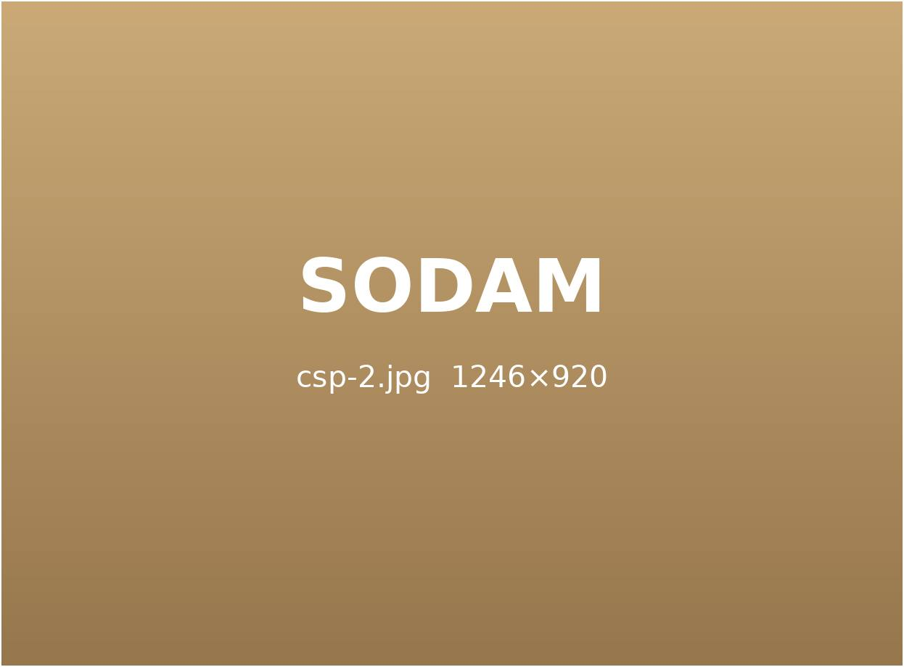

사고는 같아도,
증상은 다릅니다.
충격의 방향, 자세, 체질에 따라 나타나는 후유증은 사람마다 다릅니다.
증상에 맞춰 치료 순서를 정합니다.
이런 증상이 있으신가요?
사고 순간 목은 앞뒤로 크게 흔들리며 충격을 받기 쉽습니다. 겉으로 멀쩡해 보여도 근육과 인대가 다쳤을 수 있습니다.
- 고개를 돌리기 어렵고 뒷목이 당긴다.
- 고개를 숙이거나 들 때 아프다.
- 어깨가 무겁고 결린 느낌이 계속된다.
- 자고 일어나도 목이 개운하지 않다.
- 가만히 있어도 목이 욱신거린다.
소담한의원 증상 맞춤 치료
정확한 진단
초음파로 목 주변 근육과 인대 손상 정도를 확인합니다.
어혈 · 염증 관리
다친 부위에 약침을 놓아 뭉친 어혈과 염증을 다스립니다.
경추 정렬 교정
추나로 틀어진 목뼈를 단계적으로 바로잡습니다.
단순한 두통이 아닐 수 있습니다.
사고 때 머리가 흔들리면 목과 신경이 함께 자극을 받아 두통과 어지럼이 이어질 수 있습니다.
- 지끈거리는 두통이 계속된다.
- 어지럽고 균형 잡기가 어렵다.
- 눈이 침침하고 초점이 흐리다.
- 속이 메스껍다.
- 집중이 안 되고 멍하다.
소담한의원 증상 맞춤 치료
신경 · 순환 확인
목과 머리의 긴장, 순환 상태를 함께 살핍니다.
두통 · 어지럼 관리
침과 약침으로 머리로 가는 긴장을 풀어 줍니다.
안정 처방
놀란 몸과 마음을 가라앉히는 한약을 처방합니다.
팔다리가 저리고 힘이 빠지나요?
사고 충격으로 목 · 허리 신경이 눌리면 팔다리 저림으로 나타날 수 있습니다.

- 팔이나 손끝이 저리다.
- 다리가 당기고 무겁다.
- 물건을 쥐는 힘이 약해졌다.
- 밤이 되면 저림이 심해진다.
- 한쪽으로만 증상이 있다.
소담한의원 증상 맞춤 치료
신경 압박 확인
어느 부위에서 신경이 눌리는지 확인합니다.
신경 주변 이완
약침과 침으로 신경 주변의 긴장을 풉니다.
정렬 교정
추나로 척추 정렬을 바로잡아 압박을 줄입니다.
허리와 골반이 불편하신가요?
앉은 자세에서 받은 충격은 허리와 골반에 고스란히 전해집니다.
- 허리를 굽히거나 펴기 어렵다.
- 오래 앉아 있으면 허리가 아프다.
- 골반이 틀어진 느낌이 든다.
- 엉덩이 · 다리까지 당긴다.
- 돌아누울 때 통증이 있다.
소담한의원 증상 맞춤 치료
정확한 진단
초음파와 체형 분석으로 손상 부위를 확인합니다.
어혈 · 염증 관리
약침과 부항으로 뭉친 어혈을 풀어 줍니다.
골반 · 척추 교정
추나로 틀어진 골반과 허리를 바로잡습니다.
사고 직후부터 회복까지,
단계별로 치료합니다.
집중 치료기
사고 직후에는 어혈과 염증을 빠르게 다스리고 통증을 줄이는 데 집중합니다.
STEP 1.

회복기
굳은 근육과 틀어진 정렬을 바로잡아 움직임을 되찾습니다.
STEP 2.
관리기
후유증이 남지 않도록 재평가하고 생활 관리까지 이어 갑니다.
STEP 3.


소담 교통사고 클리닉의 특별함

정밀하게 진단합니다.
초음파로 손상 부위를 직접 확인하고, 필요하면 영상의학과 검사를 연계해 판독합니다.

몸과 마음을 함께 봅니다.
사고 뒤 남는 불안과 불면까지 함께 살피며, 몸의 통증과 어혈을 집중 관리합니다.